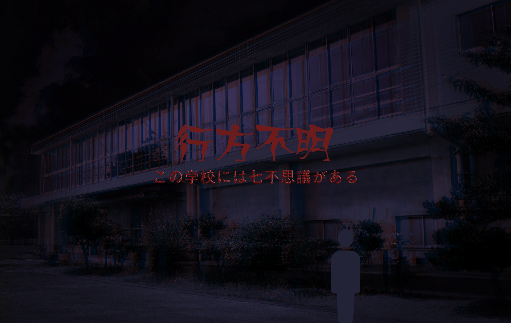

STAGE：1理科室編
理科室の扉を開けるとカタカタという音がする。
七不思議なんてそんなに怖くないだろうと思っていたが、実際に目の当たりにすると足がすくみ、嫌な汗が垂れてくる。
困ったときは、ヒントがある。なるべく見ないようにゲームを進めていこう。

STAGE：2美術室編
まだあと6つ残っているというのに相当疲れた。
しかし謎を解き終えなければ脱出ができないので急ぎたい。
次はどこに行こうか。カケルに考えを尋ねる。
「図工室とかいいんじゃないかな。ほら、あの部屋には絵画があるだろう？何か関係がありそうだよ」
やはりカケルは頼りになる。共に廊下の向こう側にある図工室へと向かう。
扉を引くとなぜか奥の方から視線を感じる。カケルも同じく視線を感じたのか、そちらへ懐中電灯を向ける。
モナリザの目から赤い液体が垂れている。本能的にそれが血の涙であると理解した。
絶叫し怯える僕を尻目に、カケルはそれでも涼しい顔をしている。
「ほら、あれがこの部屋の謎じゃないかな」

STAGE：2キーワードを入力
STAGE：3階段の怪談編
「2階と3階は普通の教室しかないから次は4階の音楽室かな」
カケルが当然のように次の場所を示す。それに従おうとした時だった。
「あっ、違う。花子さんがいるじゃないか。だから3階のトイレに行こう！」
カケルが慌てて訂正する。今度こそカケルに従い、階段を上り始める。
2階を通り過ぎ、3階に進む途中のことだった。踊り場の階段にふと目をやると、僕の姿がそこに映っていないのだ。
またどこかに謎があるのだろう。
「これがここの謎かな」
カケルが指を差す。先ほど僕も見た場所のような気がしたが、暗かったので見落としていたのだろう。

STAGE：4トイレの花子さん編
家庭科室に入ることができた！
すぐに目に入ったのは黒板にある４つの謎。
これらを解くことで、きっと次のステップに繋がるはずだ！